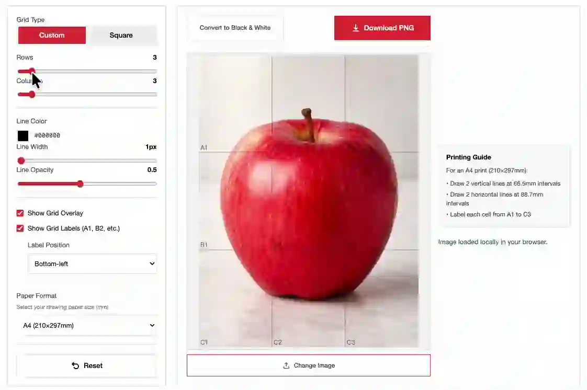

Add Grid to Image Online
Upload a reference image, add a clean grid overlay, and download the result as a PNG for drawing or sketch planning.
Upload → Add Grid → Download

Grid Overlay Controls
Upload an Image
Pick a reference image from your device. It stays local in your browser.Choose Rows and Columns
Start with a simple grid, then add more cells when the image needs detail.Tune Color and Opacity
Make the grid visible without covering the image underneath.Download PNG
Save the image with the grid overlay and use it as a drawing reference.Add a Grid Overlay to an Image
This page is for a simple action: add a grid to an image and download the result. It is meant for drawing references, sketch planning, and proportion checks.
Use fewer rows and columns for quick layout. Use more cells when you need to place smaller shapes. If the grid is hard to read, change the line color or lower the opacity before downloading.
If you need cell labels for copying a drawing box by box, use the drawing grid maker. If you want the broader tool entry, start from the online grid maker.
FAQ
How do I add a grid to an image?
Upload an image, choose rows and columns, adjust line color and opacity, then download the PNG with the grid overlay.
Is my image uploaded anywhere?
No. The image is processed locally in your browser and is not uploaded to a server.
Can I download the gridded image?
Yes. After uploading an image, use the Download PNG button to save the image with the grid overlay.
Can I change the line color and opacity?
Yes. You can adjust the line color, line width, opacity, rows, and columns before downloading.
Is this for photo collages or Instagram grids?
No. This page is for adding a drawing grid overlay to one reference image, not splitting an image into social media tiles.